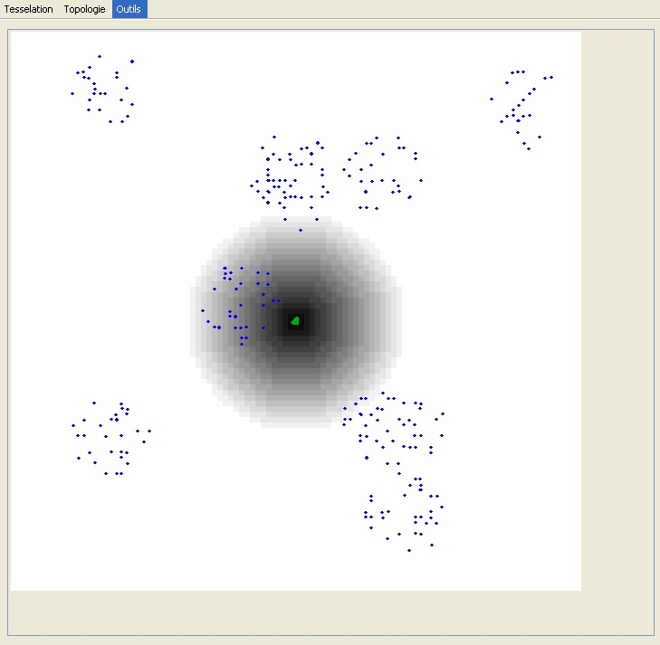

|
COSMOS: A spatially explicit model to simulate the epidemiology of in banana fields
Fabrice Vinatier, Philippe Tixier, Christophe Le Page, Pierre-François Duyck (CIRAD) & Françoise Lescourret (INRA) The model developed here, called COSMOS, aimed at simulating the spatial epidemiology of C. sordidus on the long-term, by describing the population dynamics and the resulting infestation of the host-plant (Vinatier et al., 2009). The model considers all insect stages simultaneously and assumes individual variations according to each developmental stage (see figures class diagram, oviposition, move). We hypothesized that the distribution of C. sordidus populations and attacks in banana fields can be modeled according to simple epidemiological rules identified at individual level and calibrated from the literature, with a model less parameter-demanding than most IBMs. COSMOS has been validated with field data. A module is added to the model to simulate pheromone mass trapping, calibrated from Tinzaara et al. (2005).The model aims at understanding how to play with spatial heterogeneity of resources and populations to a better pest management. Spatial heterogeneity can be seen at different levels, at planting, population and trapping levels. The model is designed to understand mechanisms of each level and the interactions between levels. According to farmer practises and to production areas, banana plants can be planted regularly, in double row or in patches (see figure plants). Spatial distribution of weevils at initialisation depends on the type of contamination (see figure adults). In field conditions, contamination of newly banana plantations could be done by two major ways: through infested planting material (initial inoculum is randomly distributed in space, depending if a banana plant is infected or not) and through invasion of adult weevils from nearby plantations (Gold et al., 2001), especially those heavily infested (initial inoculum is distributed on the neighbouring sides of the plantation). New plantations could also be infested by adult weevils that have survived from the latest banana plantation (initial inoculum is patchy distributed). Spatial and temporal organization of trapping is a key factor of success, because of patchy distributions of weevils in the field. The most common and most effective strategy consists in monitoring farms population with a regular network over the farm, or applying massive trapping in highly infested fields or on the periphery of the field to limit its colonization with a barrier of traps (see figure traps). References
For more information contact F. Vinatier or visit his home page.
|